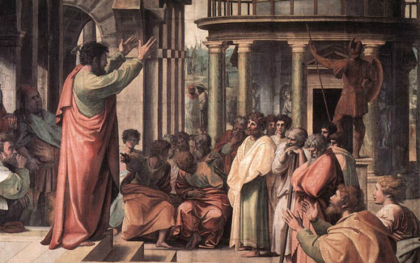
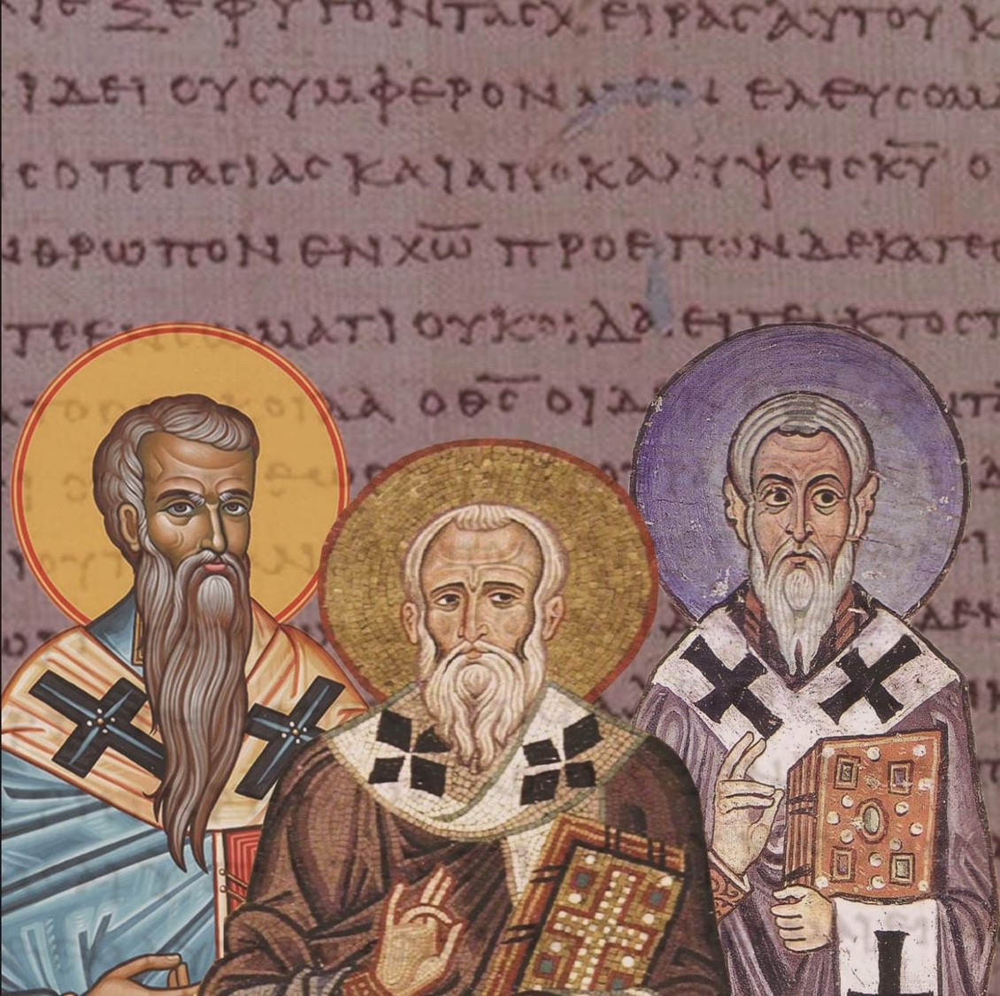
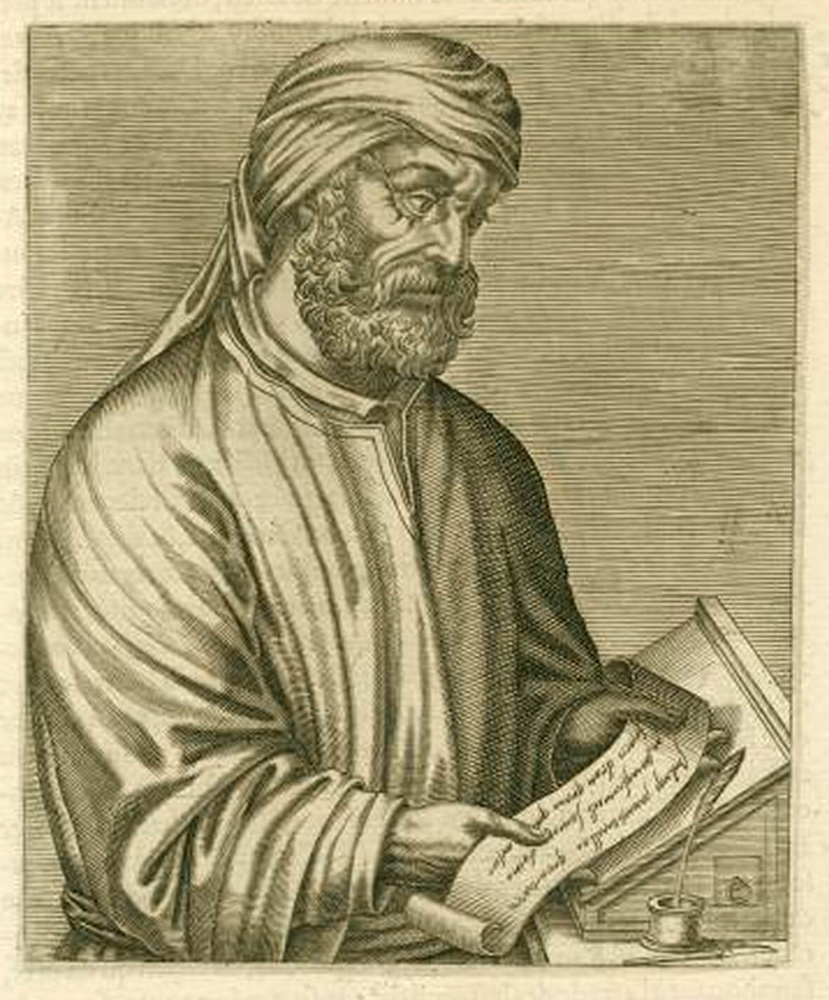

-
Jesus the Messiah
During this era, Jesus of Nazareth, the Messiah, said in Mark 12:29, "The first of all the commandments is Hear O Israel! The LORD (namely YAHWEH) our God, YAHWEH is one." Jesus had quoted the Shema, that is, Deuteronomy 6:4. In prayer, Jesus said in John 17:3, "You Father, are the Only True God." In John 8:40, Jesus said of himself, "But now you seek to kill me, a man who has told you the truth which I heard from God." In John 20:17, Jesus after he was raised from the dead by God, proclaimed "I am ascending to my Father and your Father, and to my God and your God." So it is clear that during this era, Jesus presents himself as a man, who prays to and is distinct from the God of the Jews. Please note: the terms The Messiah and The Christ are synonymous.

-
The apostle Peter
Peter told a crowd of over 3000 people on the Day of Pentecost that Jesus of Nazareth is a man approved of God. (Acts 2:22) That God had resurrected Jesus from the dead and that Jesus was elevated to a position of lordship by God. (Acts 2:36) Despite this, Peter refers to Jesus as "the Servant of God" four times, emphasising a clear distinction between God and Jesus. (Acts 3:13,26; 4:27,30)
 -
The apostle Paul
The apostle Paul (AKA Saul of Tarsus) at his conversion confessed that Jesus is the Messiah, the Son of God. (Acts 9:20,22) Paul declared in 1 Timothy 2:5 that "There is one God and one Mediator between God and men, 'the Man' Christ Jesus." To the Corinthians, Paul declared "There is no other God but one. To us there is one God, the Father, of whom are all things, and we for Him; and one Lord Jesus Christ, through whom are all things, and through whom we live." (1 Corinthians 8:6) So to Paul, as well as to his Christian audience, there is solely ONE GOD, the Father; whilst Jesus the Messiah, is the human mediator between the ONE GOD and humankind.
-
Early church fathers
Here is a sample of the kind of statements that the (so-called) church fathers began to make :- Ignatius (50-117) "For our God, Jesus Christ, was, according to the appointment of God"; Justin Martyr (100-165) "You would not have denied that He was God, Son of the only, unbegotten, unutterable God"; Irenaeus of Lyons (130-202) "Christ Jesus is our Lord, and God, and Savior, and King, according to the will of the invisible Father." Dear reader, do not these statements imply the existence of two gods?
 -
Tertullian
Tertullian is perhaps most famous for being the first writer in Latin known to use the term trinity (Latin: trinitas). This is his commentary on the majority of the believers in his era: "The simple, indeed, (I will not call them unwise and unlearned,) who always constitute the majority of believers, are startled at the dispensation (of the Three in One), on the ground that their very rule of faith withdraws them from the world's plurality of gods to the one only true God; ... The numerical order and distribution of the Trinity they assume to be a division of the Unity ... They are constantly throwing out against us that we are preachers of two gods and three gods, while they take to themselves pre-eminently the credit of being worshippers of the One God;"
 -
Melito promulgates deicide - 'God is murdered!'
In a sermon about the Passover, Melito of Sardis makes the following statement: "The one who hung the earth in space, is himself hanged; the one who fixed the heavens in place, is himself impaled; the one who firmly fixed all things, is himself firmly fixed to the tree. The Lord is insulted, God has been murdered, the King of Israel has been destroyed by the right hand of Israel."In just under two centuries following the birth of Jesus, Jesus has been identified as the God who was killed! The departure from biblical teachings was quick and evident.

-
The Council of Nicea
This Council, that was chaired by Emperor Constantine I, declared that the Son was "true God, coeternal with the Father." From this council was produced the Nicene Creed which began by stating "We believe in one God, the Father almighty, maker of all things visible and invisible; And in one Lord, Jesus Christ, the Son of God, begotten from the Father, only-begotten, that is, from the substance of the Father, God from God, light from light, true God from true God, begotten not made, of one substance with the Father,"

-
Edict of Thessalonica
The Edict of Thessalonica (also known as Cunctos populos), issued by Theodosius I, made the Catholicism of Nicene Christians the state church of the Roman Empire. It condemned other Christian creeds as heresies of "foolish madmen," and authorised their punishment. It reads: "Let us believe in the one deity of the Father and of the Son and of the Holy Spirit, in equal majesty and in a holy Trinity. We order the followers of this law to embrace the name of Catholic Christians; but as for the others, since, in our judgment they are foolish madmen, we decree that they shall be branded with the ignominious name of heretics, and shall not presume to give to their conventicles the name of churches. They will suffer in the first place the chastisement of the divine condemnation and in the second the punishment of our authority which in accordance with the will of Heaven we shall decide to inflict."

-
First Council of Constantinople
At this council in now Istanbul, Turkey; which was chaired by the Roman Emperor Theodosius I; the 'Holy Spirit' was added to the Nicene Creed. The Niceno-Constantinopolitan Creed declared that "the Lord, the Giver of Life, Who proceeds from the Father, Who with the Father and the Son is worshipped and glorified." Thus finalising the doctrine of the Trinity as known throughout Christendom today. So, a doctrine and creed, which are not mentioned in Scripture was foisted onto Christians, by the aid of the Roman Empire.